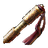

3.27 Sunder Leveling into Pohx RF Swap
Updated: Feb 11, 2026
- This guide adapts Pohx's RF guide by using Sunder for leveling instead of the traditional caster approach. Play Sunder until Level 52-55, then use the free campaign respec and gold at Blood Aqueducts to hard-swap into Righteous Fire and follow Pohx's instructions. This approach allows you to level significantly quicker while still transitioning smoothly into the powerful RF setup once you reach maps.
POB Links
- 3.27 Guide POB: This Guide USE THIS
- 3.26 Day 2 POB: LVL 94 Starter
- 3.26 Day 3 POB: LVL 95 MB Swap
- 3.26 Day 5 POB: LVL 98 Dawnbreaker + Stormshroud (ailment immune)
- 3.26 Day 7 POB: LVL 99 Crafted Shield
- 3.26 Day 9 POB: LVL 99 Svalinn Swap
REGEX
Gear Regex - works for full campaign
-\w-.-|r-r-r|g-[gr]-r|r-[gr]-g|g-r-g|r-g-r|Runn|s:.+ax
Gem Regex for only Acts 1-3
"stbl|mida|omen|jade| pur|er att|ood r|determ|y of f"
ACT 1 PROGRESSION
End of Act 1: 20-23 mins - Level 12

- Starting Gems: Heavy Strike+Ruthless
- Ensure you have R-R linked somewhere before leaving town
- Below are all breakpoints by monster, after each name go to town and get the items listed.
Tarkleigh
- Get Ground Slam(left gem) → Replace Heavy Strike
- Buy Stone Axe for cheap
- Buy any R-R linked
- Pick up any shield and put it on off-hand for Shield Charge at level 4
Hailrake
- Get Quicksilver
- Get Decoy Totem (optional)
- Get Shield Charge
- Get Chance to Bleed or Momentum
- I personally take Momentum and link with Shield Charge
- Buy Jade Amulet / Iron Ring 3x 
- Buy Frostblink
- Buy Momentum or Chance to Bleed
- Buy the other gem you didn't get earlier
- Buy Blood & Sand
Dweller
- Get Faster Attacks
- Buy 1-2x Iron Rings and 2x mana potions to make Brutus fight easier
Brutus
- Get Leap Slam
- Get Indimidating Cry
Fairgraves (Enter Caverns)
- Get Sunder
- Link 1: Ground Slam+Ruthless+Chance to Bleed or Momentum
- Link 2: Shield Charge+Momentum
- Util: Frostblink, Blood & Sand, Intimidating Cry
- Link 1: Sunder+Ruthless+Chance to Bleed or Momentum
- Link 2: Leap Slam+Faster Attacks+Momentum
- Util: Frostblink, Blood & Sand, Intimidating Cry
Level 1-9: Use Ground Slam
Level 10: Replace Shield Charge with Leap Slam
Level 12: Mervail
Total Cost: 1 Transmute, 3+ Wisdoms
ACT 2 PROGRESSION
End of Act 2: 38-40 mins, Level 20

Fidelitas
- Get Herald of Ash
- Buy Blood Rage
- Buy Herald of Purity (optional)
- Buy Jade Amulet3x
Weaver
- Link 1: Sunder+Melee Physical Damage+Ruthless or Close Combat
- Link 2: Leap Slam+Faster Attacks+Momentum
- Aura: Herald of Ash
- Util: Frostblink, Blood & Sand, Intimidating Cry, Blood Rage
Total Cost: 1-2 Alterations , 3 Wisdoms
ACT 3 PROGRESSION
End of Act 3: 55-60 mins, Level 28-30

You can gamble at Maramoa at level 24 for 4 Links. Focus on armor since it's used for a longer time than weapons which you should always be upgrading. DO NOT OVER SPEND as you will need gold later to respec to RF in Act 9
- 2H Axe / body armor: 145 gold each
- Gloves / Helmet / Boots: 135 gold each < BETTER OPTION
Piety
- Get Vulnerability
- Link 1: Sunder+Melee Physical Damage+Cruelty+Ruthless or Close Combat
- Link 2: Leap Slam+Faster Attacks+Momentum
- Aura: Herald of Ash
- Util: Frostblink, Blood & Sand, Intimidating Cry, Blood Rage, Vulnerability
Total Cost: None
ACT 4 PROGRESSION
End of Act 4: 1h20, Level 35

- Do Normal Lab once you reach Crystal Veins waypoint
- Take Chieftain - Tasalio, Cleansing Water for first ascendancy
Malachai
- Get Fist of War replace Cruelty or Close Combat
- Link 1: Sunder+Melee Physical Damage+Cruelty/Ruthless+Fist of War
- Link 2: Leap Slam+Faster Attacks+Momentum
- Aura: Herald of Ash
- Util: Frostblink, Blood & Sand, Intimidating Cry, Blood Rage, Vulnerability
Total Cost: None
ACT 5 PROGRESSION
End of Act 5: 1h35, Level 40

- Act 5-9 will keep the same gem links until the respec at Blood Aqueducts in A9
- Link 1: Sunder+Melee Physical Damage+Cruelty/Ruthless+Fist of War
- Link 2: Leap Slam+Faster Attacks+Momentum
- Aura: Herald of Ash
- Util: Frostblink, Blood & Sand, Intimidating Cry, Blood Rage, Vulnerability
Total Cost: None
ACT 6 PROGRESSION
End of Act 6: 2h, Level 45

-
As soon as you finish Twilight Strand quest to unlock Lilly Roth make sure you buy these 6 gems and level them in the off-hand weapon. You will need these once you respec in Blood Aqueducts for the RF swap.
Total Cost: 1 Transmute, 1 Wisdom, 3 Alterations, 1 Chance
- After killing Shavronne grab the helmet reward from Sin in town that matches your builds armor type:
- If the reward has exactly those links, take it. It's ready to equip with your corresponding gems once you swap builds.
- Check wiki if needed: Essence of Umbra Quest
ACT 7 PROGRESSION
End of Act 7: 2h15, Level 49

- After killing Maligaro grab the boot reward from Helena in town that matches your builds armor type:
- If the reward has exactly those links, take it. It's ready to equip with your corresponding gems once you swap builds.
- Check wiki if needed: Essence of Artist Quest
- Start looking for sceptres and shields and links for your curse and movement setups:
ACT 8 PROGRESSION
End of Act 8: 2h30, Level 52

- Tree above is what you should have going from Act 1 to end of Act 8 (Blood Aqueducts)
- This is the "pre swap" tree at around level 52 or 55
LEVEL 52 RESPEC (BA)
Time at BA: 2h30, Level 52

- 26 point respec require d= 16 from campaign + 10 from gold
- 10 pts @ 313 gold each (lvl 52) = 3130 gold
- In a test run (lvl 52 @ BA) I ended with 7282 gold after doing 3 armor gambles at level 24 in act 3 to get 1 4-link.
- After 26 point respect I ended with 4152 gold which I used to gamble other armor pieces or sceptre/shield for RF swap.
- Gamble body (705 gold), gloves/helm (676 gold) for 4-link RF/FT colors if you did not get from quest rewards in A6 or A7.
- As a reminder these are the colors you're looking for:
-
If you're continuing into Heist or finishing campaign it's important to buy these 9 gems to level off hand or in any open sockets or off-hand. Ensure you buy 2 Lifetaps from Act 1 so they are pre-leveled and another 2 from Act 6 to keep at level 1. If you're interested where they are used, check the Heist links below.
- Act 1: 2x Lifetap (max)2x , Enduring Cry , Vitality
- Act 3: Punishment
- Act 6: 2x Lifetap (1)2x , Arrogance, Skitterbots
Total Cost: 6 Transmutes , 2 Alterations , 1 Chance
RF HEIST LINKS
Try to have these links as soon as you get to BA and start doing heists. You can swap around the auras to fit your needs. For example, if you think you're tanky enough or if you have enough damage, feel free to replace determination or malevolence with Haste so you can move faster.
- Link 1: RF+Elemental Focus+Lifetap (max)+Burning Damage or Efficacy
- Link 2: Fire Trap+Swift Affliction+Lifetap (max)+Trap & Mine Damage
- Link 3: Shield Charge+Lifetap (1)+Faster Attacks+Momentum
- Link 4: Vitality+Arrogance
- Link 5: Punishment+Lifetap (1)+Enduring Cry+Frostblink (1)
- Aura: Determination, Malevolence, Skitterbots
- Util: Blood Rage
RF MAPPING LINKS
- The RF gems are in order of importance, some gems like Swift Affliction will not work without the use of Lifetap as it adds a duration tag.
- It will be important to buy aura gems directly from A3 so they start at Level 11. Getting Purity of Fire and Determination first is really big for survivability.
- If you have enough damage or defences, you can use Haste to move faster.
- Link 1: RF+Burn Damage+Ele Focus+Efficacy+Lifetap (max)+Swift Aff
- Link 2: Fire Trap+Swift Affliction+Lifetap (max)+Trap & Mine Damage
- Link 3: Shield Charge+Lifetap (1)+Faster Attacks+Frostblink (1)
- Link 4: Vitality+Arrogance
- Link 5: Punishment+Lifetap (1)+Enduring Cry
- Aura: Determination, Purity of Fire, Malevolence or Skitterbots
- Util: Blood Rage